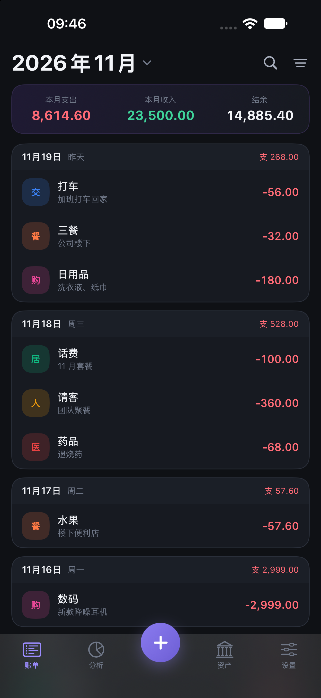
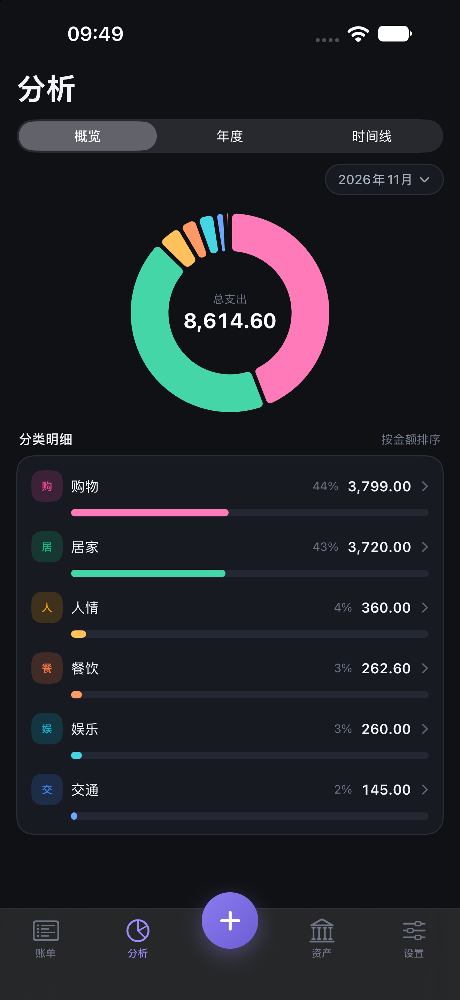
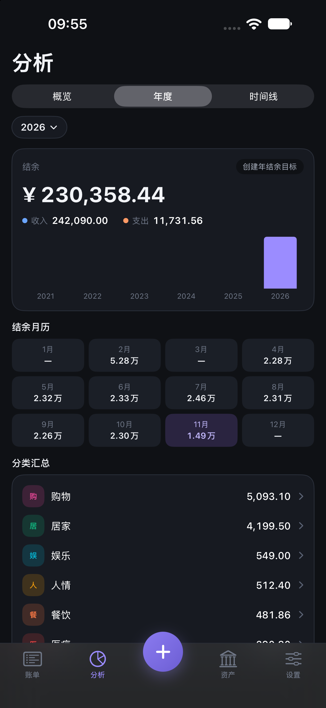
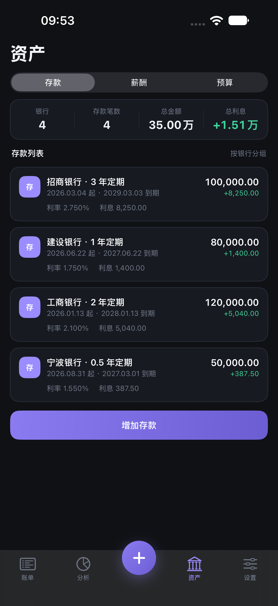
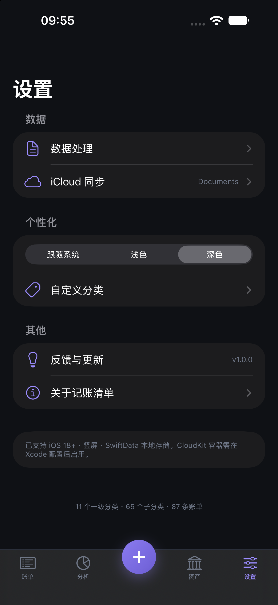

记记账清单 · Record
暗色搭配 Dark Theme v1
底色不用纯黑，用带蓝调的 #0F1115 做底、#171A21 做卡片、#1E222B 做浮起层，靠明度差分层；品牌紫在暗色下提亮到 #9B8CFF，支出/收入也同步提高明度，保证在深色底上的可读性。
基础色板
浅色值仍用于浅色模式，两套通过 UIColor dynamic provider 自动切换。
分类色 · 暗色提亮版
只提高明度与饱和度，不改变色相，保证和浅色模式的分类认知一致。
界面效果
真机 / 模拟器截图，通过设置 → 个性化 → 外观切到深色，或跟随系统。

账单卡片 #171A21、日期条 #1B1F27、描边 #2A2F3A；金额用提亮后的红/绿。

分析 · 概览环形图与比例条使用提亮后的分类色，条形底轨 #242832。

年度结余卡 #171A21；当前月用 #2A2440 品牌浅底；柱状图非当前年 #2A2F3A。

资产 · 存款银行图标用品牌色，金额主文字 #F2F4F8，利息 #3FD39A。

设置系统分组列表自动适配；外观可选跟随系统 / 浅色 / 深色。
规则
1 · 不用纯黑背景 #0F1115，卡片 #171A21，浮起 #1E222B。三层明度差各约 4%，既分层又不刺眼。
2 · 描边优先于阴影暗色下阴影几乎不可见，卡片靠 1px #2A2F3A 描边区分边界；只有「＋」保留柔和投影。
3 · 品牌色提亮#6C5DD3 在深底对比不足，暗色改用 #9B8CFF；浅底文字用 #C4BAFF，避免纯白加紫。
4 · 语义色同向调整支出 #FF6B76、收入 #3FD39A，色相不变、明度提升，与分类色区分。
5 · 图表底轨另设比例条底轨 #242832，比卡片略亮，保证空槽可见；非当前年柱 #2A2F3A。
6 · 大色块降饱和品牌浅底 #2A2440、摘要卡渐变 #1F1A33→#171A21，避免大面积高饱和紫。